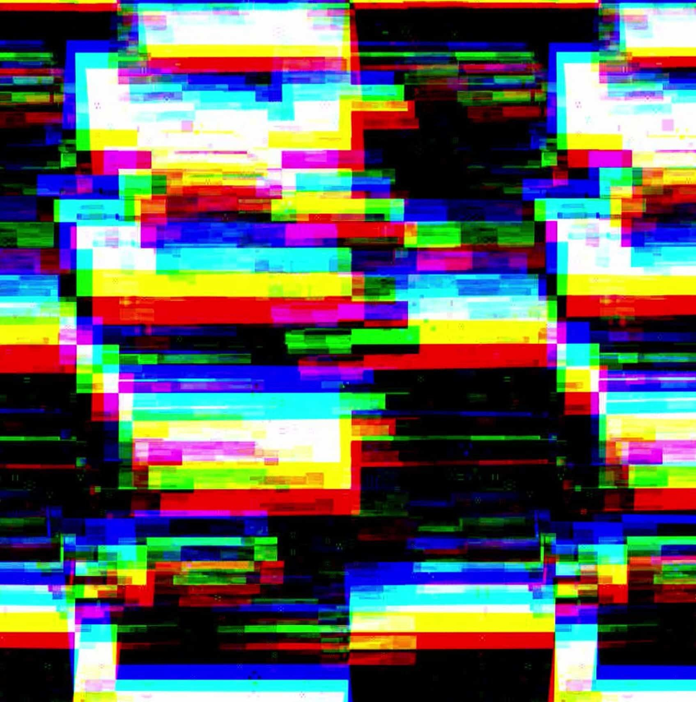

The Infinite Twist
9 Tracks • Album

The March of the Flawed
6 Tracks • EP

The March Of The Flawed (Live at 7th Hell)
6 Tracks • Live

November Surprise
4 Tracks • ENCRYPTION Lvl 4
Soundtracks for the Cyberpunk universe
Welcome In this WIP Website, where you can have unlimited access to all the AI generated songs I 'made', representing the journey of The Fallen Guardians through the year of 2080 up to an unknown future... All of them are downloable, for boundless delight !
9 Tracks • Album
6 Tracks • EP
6 Tracks • Live

4 Tracks • ENCRYPTION Lvl 4